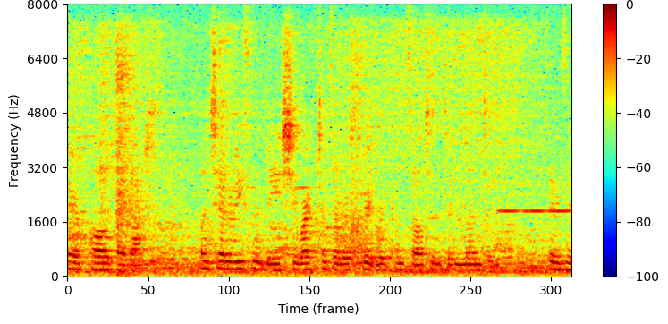
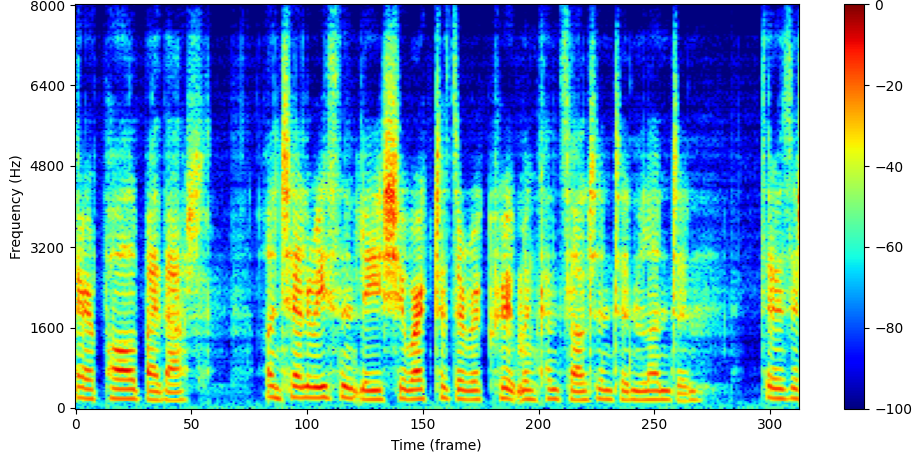
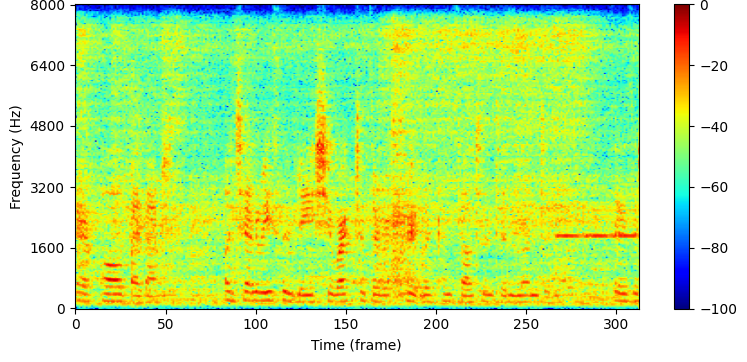
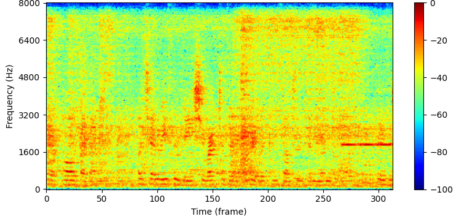
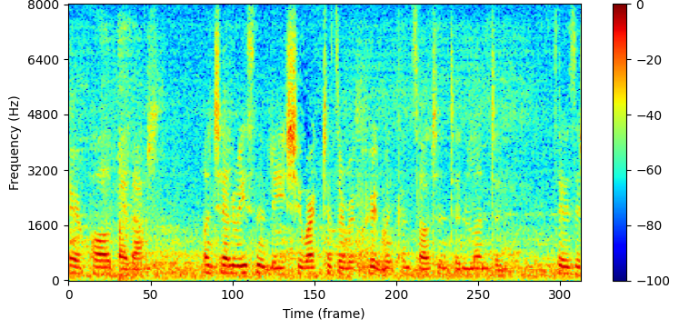
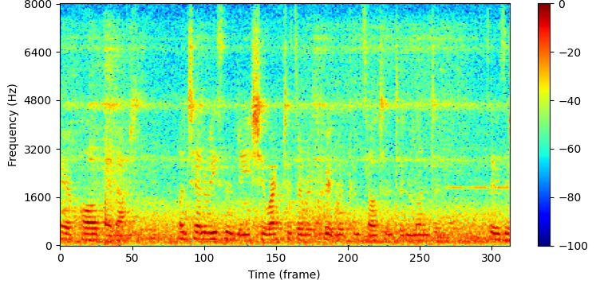
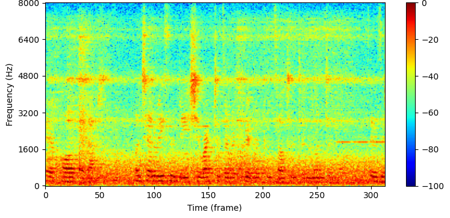
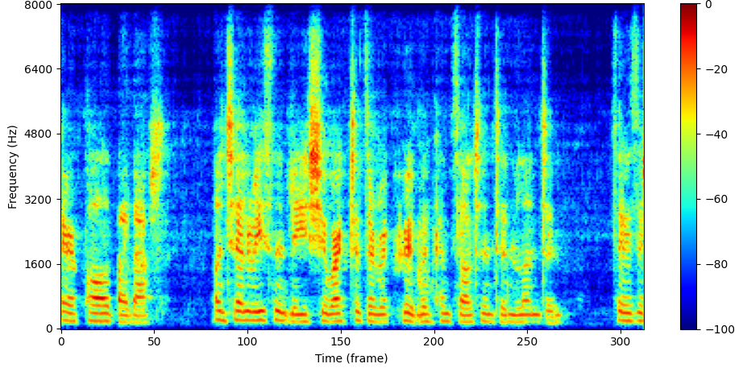
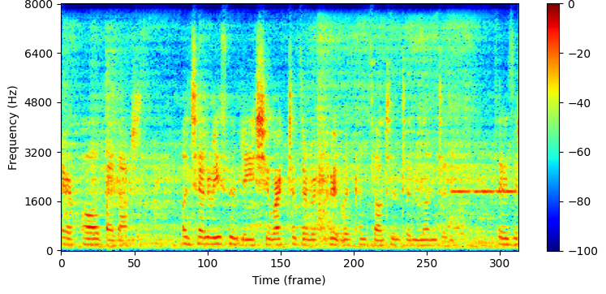
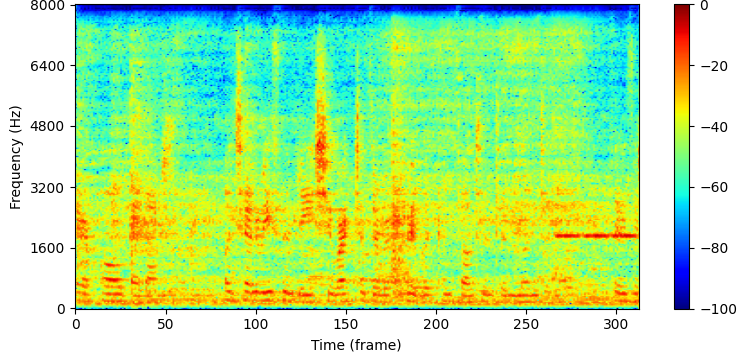

National Tsing Hua University, Hsinchu, Taiwan
Paper: link to appear
The same test utterance reproduced in the three modes. Read down a column to compare the methods within one mode; read across a row to hear the tuning parameter α move the system from speech enhancement to full-scene immersion.
Simulated room T60 = 400 ms SNR = 17 dB SIR = 0.88 dB
Please use headphones. These are binaural ear signals. Over loudspeakers the interaural cues the system reproduces will not survive, and the comparison will not mean anything.










The complete system running end to end in the measured room, from far-end analysis through near-end reproduction. In each clip the talker begins inside the target zone — here, the region the camera sees — and walks out of it about twenty seconds in. What happens to her voice at that moment is what separates the three modes.
Her voice is retained while she is inside the zone, and suppressed to silence once she leaves it.
Her voice is attenuated after she leaves the zone, but stays audible.
Her voice is preserved at the same level wherever she stands.
@article{yang_tunable_telepresence,
title = {A Head-Tracked Tunable Audio Telepresence System Based on the
Generalized Model-Matching Sound Field Analysis and Synthesis Framework},
author = {Yang, Shu-Yi and Anthony, Michael and Bai, Mingsian R.},
journal = {Discover Robotics},
year = {2026}
}